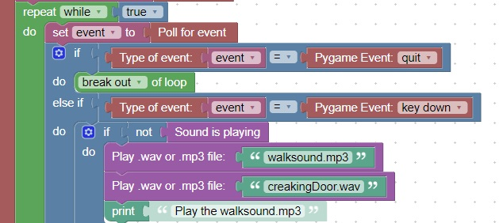

Check if mixer is playing a sound
This webpage: http://www.pygame.org/docs/ref/mixer.html discusses mixer functions which are available
The mixer has a busy() function which returns true when a sound is currently being played
This code will use the busy() function to determine when to resend a sound
